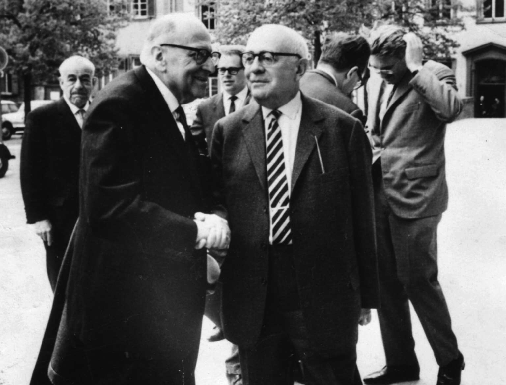

社会研究所创立于1923年。这个最早的马克思主义思想库从一个力争解决俄国革命后工人运动面临的实际问题的马克思主义研究小组成长起来，得到了赫尔曼·韦尔的资助。他是一位见多识广的商人，在阿根廷谷物市场上大发其财。这笔资金是在他的儿子费利克斯的敦促下给出的，后者自认为是“客厅里的布尔什维克”。
费利克斯·韦尔的密友包括库尔特·阿尔伯特·格拉赫。作为社会民主主义者和经济学家，他本可以成为研究所的首任所长。然而，格拉赫不幸死于糖尿病。卡尔·格吕堡于是代之接管。他创办了研究所的第一份正式出版物《社会主义和工人运动史文库》，其中发表了许多重要作品，包括柯尔施的《马克思主义和哲学》（1923年）。加入格吕堡行列的有亨利克·格罗斯曼、弗里德里希·波洛克、弗里茨·斯特恩伯格和卡尔·奥古斯特·魏特夫。他们都是共产主义者。他们依然怀念1918——1921年间的民主工人委员会，也设想建立一个德意志苏维埃共和国。他们的思想工作提供了有关资本主义的崩溃、国家的新角色以及帝国主义的大量不同观点。但这个群体随后消失在幕后，研究所的总体方向也在1930年发生转变。就在这一年，马克斯·霍克海默组成新的核心集体，作为法兰克福学派逐渐为人所知。
霍克海默出生在斯图加特附近一个富有的犹太商人家庭。他在早年求学时期并无过人之处，于是离开高中，在父亲的纺织厂做学徒。然而，在1911年，他结识了弗里德里希·波洛克，波洛克将他引入哲学和社会科学，并成为他一生的朋友。霍克海默在一战后完成了高中学业。他浅尝共产主义，在法兰克福大学期间学习了众多科目，最终写成一篇关于康德《判断力批判》（1790年）的学位论文。

图2 法兰克福学派的三位领军人物：马克斯·霍克海默（左）、西奥多·W.阿多诺（右）和于尔根·哈贝马斯（后）。这是他们唯一的一张合照
霍克海默在担任所长之前很少发表作品。这在希特勒1933年胜选后发生了变化，他当时正忙着将研究所从法兰克福迁往日内瓦，随后搬到巴黎，最后迁址于纽约市的哥伦比亚大学。他在20世纪30年代的文章致力于将批判理论与其哲学上的竞争对手区分开来，同时阐明自由资本主义如何通过建立极权主义的心理、种族和政治基础背叛了它的初衷。其他讨论大众文化、工具理性和威权国家的作品为阿多诺和霍克海默的经典著作《启蒙辩证法》（1947年）铺平了道路。霍克海默的想法在数年间无疑发生了变化。然而，他始终专注于苦难的影响和个人经验的解放的可能性。
霍克海默也一直是跨学科研究的拥护者。在他的领导下，法兰克福学派试图弥合规范性理论与经验性工作之间的鸿沟。他在1930年的就职演讲强调了这一目标，甚至在流亡期间，霍克海默还为美国犹太人委员会编辑了一部多卷本跨学科研究课题，即“偏见研究”丛书。它包括保罗·马辛出色分析德意志帝国反犹主义社会根源的《破坏的彩排》（1949年）；利奥·洛文塔尔和诺伯特·古特曼的《骗人的先知们：美国煽动者的手法研究》（1950年）以及西奥多·W.阿多诺和一众研究者的经典著作《权威人格》（1950年）。
俄国革命和德国1919年“斯巴达克团”反叛点燃了霍克海默对于激进主义的热情。但斯大林的清洗和恐怖机器的出现造成了严重的后果。霍克海默最终不仅与共产主义决裂，也与马克思主义分道扬镳。甚至在将研究所迁回德国并于1951——1953年担任法兰克福大学校长之前，他在政治上便已经转向右翼。霍克海默最终反对阿尔及利亚的反帝国主义斗争，支持越南战争，并且斥责1968年的抗争。
这一时期，他对于否定苦难的关注发生新的转变。通过回顾禁止描绘神性的《旧约》，他开始相信，此时或许只有通过对现实的全盘否定和对解放的渴望，才能保存反抗观念。神圣性——或者更进一步说是超脱尘俗——成为对抗世俗的优势。他将对启蒙运动的批判推向极致。朋友们注意到他对天主教兴趣渐增。理论与实践之间的所有联系都被斩断。当马克斯·霍克海默在78岁离世时，批判理论已然岌岌可危。
埃里希·弗洛姆在早期便是霍克海默的一位密友。弗洛姆的专长是心理学，但他也深谙神学问题。事实上，他与第一任妻子弗里达·赖希曼在柏林建立的精神分析研究所就被称为“摩西五经治疗所”。弗洛姆是一位多产的作家并且在思想上勇往直前：他是将西格蒙德·弗洛伊德的思想与马克思的思想联系起来的先驱之一。然而，弗洛姆如今没有得到足够的重视。他留名于世通常是由于他那些更具学术性的批评家眼中的“如何”书，如《爱的艺术》（1956年，为大众文化表现爱的方式提供了一种负责任的替代选择）；“乐观”书，如《人心》（1964年，抗衡对于西方文化的愤世嫉俗的攻击）；以及所谓的关于国际事务的粗浅研究，如《人性会占优势吗》（1961年，明智地呼吁禁止核武器并缓和冷战思维）。弗洛姆的《逃避自由》（1941年）因对于极权主义的透彻分析而被人们铭记。但他在《人类的破坏性剖析》（1973年）中所作的重要研究却被不公平地遗忘了。
弗洛姆在一个正统的犹太家庭中长大，从孩提时期便受教于博学的拉比，如尼赫迈亚·诺贝尔，尤其是萨曼·巴鲁克·拉宾科。他的学位论文是《犹太律法：犹太离散社群的社会学研究》（1922年），讨论宗教主题的最早作品包括《安息日》（1927年）以及带有马克思主义转向的《基督的教义》（1930年）。尽管他在20世纪20年代接受了无神论，但对于宗教提供的心理诉求和道德冲动的兴趣从未完全消失，他在《像上帝一样存在》（1967年）中对《旧约》做出的人文主义的新诠释则引起了公众的共鸣。弗洛姆发展“唯物主义心理学”的尝试折射出批判理论对全面社会转型的最初承诺。对精神分析的实践性的强调，以及与反抗压迫和促进人文主义价值观的联系，成为他职业生涯的标志。
弗洛姆于1962年协助创办了墨西哥精神分析协会，并成为拉美精神分析学发展历程中最具影响力的人物之一。弗洛姆坚决反对越战和美国的帝国主义，支持无数进步事业，提倡一种非官僚主义的参与式“社群社会主义”。他无疑也是法兰克福学派中最有文采和最清醒的作家。弗洛姆最终在1940年同研究所决裂。核心集体中的其他成员显然艳羡他的名气，尽管也与他存在合理的政治和哲学分歧。直至人生的最后阶段，他与研究所昔日的任何一位伙伴几乎都没有联系。然而，如同法兰克福学派的任何一位成员，埃里希·弗洛姆一直忠于批判理论的具体环节、人文精神和变革目标。
他的唯一一位真正的竞争对手是对新左派产生思想影响的赫伯特·马尔库塞。马尔库塞的政治履历可以回溯至青年时代参与1918——1919年的斯巴达克团反叛，1941年至20世纪50年代他供职于战略情报局，在制定美国对西欧的政策中发挥了重要并且具有进步性的作用。他早期的文章试图将历史唯物主义与“历史性”或个人可借以体验社会现实的现象结构衔接起来。类似的关注贯穿于《黑格尔的本体论与历史性理论》（1932年）之中，该书为黑格尔在欧洲的日渐复兴做出了贡献，而《理性与革命》（1941年）对这位伟大思想家同批判理论的关系提供了一种影响深远的解释。马尔库塞也撰写出版了一些出色的论文集。他始终了解艺术展现出的乌托邦潜力，但依旧关注实际的反抗形式，设想脱离既定秩序。不过，他这些理论上的冒险得到了各类社会学和政治学研究的补充。
1933年加入社会研究所之后，马尔库塞对自由主义国家、垄断资本主义与法西斯主义的关系以及共产主义的衰退提出了疑问。他后来的著作预见了向发达工业社会的异化做出回应的新的社会运动。他对1968年的变革前景保持乐观，也想象到随之而来的保守派的反应。幸福意识、压抑性的去崇高化以及大拒绝等概念都是由他传播开来的。他的代表作《单向度的人》（1964年）真正意义上将批判理论带到美国，通过它的引文将许多年轻的知识分子引入法兰克福学派。马尔库塞始终认为自己是在历史唯物主义的传统中做研究的。但他在方法上是灵活的，并且是文化转型的预言家。赫伯特·马尔库塞向美国以及世界许多地区的一代青年激进人士展示了批判理论激进的政治要素。
相形之下，瓦尔特·本雅明在美国一直不为人知，直至杰出的政治理论家汉娜·阿伦特在《纽约客》发表了一份对他的介绍并将他的一批高质量的文章编辑为论文集《启迪》（1969年）。在此之后，本雅明作为才华出众且洞若观火的独特的思想家开始受到敬仰。他的另外一部文选《沉思》（1986年）强化了这种评价。本雅明的著作包括最初于20世纪30年代作为一系列报刊文章出现的亲切的自传体作品《单行道》（1928年）和《1900年前后柏林的童年》（1950年）、题为《德国悲剧的起源》（1928年）的有关巴洛克艺术的抽象研究以及拥有几千处引文并为理解现代性提供了一座真正的镜廊的未完稿《拱廊计划》（1982年）。20世纪70年代晚期，随着后现代主义和其他形式的哲学主观主义在美国得到新的普及，本雅明的名望迅速达到史无前例的高度：研究论著大量涌现出来，他的《作品选》的每一卷几乎都成为学术畅销书。
本雅明来自一个富裕的犹太家庭，是家中两个男孩之中的一个。他生于柏林，1919年在伯尔尼大学获得博士学位，随后成为流浪作家，从未有过一份稳定的工作。这给人一种感觉，即本雅明是梦想家的化身——这个不切实际的人有着使他超脱尘世的想象力。其作品的标志是专注于语言的可替换性、记忆的本质以及日常生活中看似平凡的经历，如吃饭、讲故事和藏书。本雅明相信，所有这一切都突显了更为广泛的社会趋势。他那些明确属于政治范畴的著作并无创见，以——19261927年的莫斯科日记为例，它们对他所处时代的重大事件几乎没有提出深刻见解。但当他研究夏尔·波德莱尔的诗作、J. W. 冯·歌德的《有选择的亲和性》或弗兰兹·卡夫卡和马塞尔·普鲁斯特的小说时，情况就不一样了。本雅明关于建筑、摄影、浪漫主义以及翻译的文章同样如此。他那些探讨现代性对于个人体验和日常生活的审美影响的文章，很是吸引人并具有煽动性。
受童年时期的朋友、日后成为犹太神秘主义传奇学者的格肖姆·肖勒姆以及马克思主义剧作家贝尔托特·布莱希特的影响，本雅明试图将弥赛亚思想与对历史唯物主义日渐浓厚的兴趣融合起来。他反对科学社会主义的决定论，对它将无阶级社会转变为不可企及的理想心怀蔑视，他所关注的是唤回现实的形而上学经验，并最终唤回未实现的乌托邦式的历史可能性。这一事业因无法阐明解放的障碍以及根植在他的总体思想中的不一致性和互相排斥的假设而受到干扰。但毫无疑问，瓦尔特·本雅明继续启迪、挫败并教导着尤其是年轻的不受陈规约束的激进知识分子。他的著作在遍布“废墟”的年代唤起了流亡，而他在1940年试图逃离纳粹对法国的入侵时悲惨的自杀给他的人生打下了尤为戏剧化的烙印。
瓦尔特·本雅明仅有的一名学生西奥多·W.阿多诺体现了法兰克福学派的跨学科理想和欧洲知识分子的形象。他似乎无所不知——而且比所有人都更清楚。阿多诺同样出生于一个资产阶级家庭，父亲是犹太人，母亲是意大利人。他于1924年获得博士学位。作为曾经受教于伟大作曲家阿尔班·贝尔格并深受阿诺德·勋伯格影响的音乐学家，阿多诺在20世纪20和30年代编辑过一本音乐杂志，后来为托马斯·曼《浮士德博士》（1947年）的音乐理论章节提出过建议。继经典著作《新音乐的哲学》（1949年）之后，他还对路德维希·凡·贝多芬、理查德·瓦格纳以及古斯塔夫·马勒等伟大作曲家进行了阐释。
阿多诺也是一位敏锐的文学兼诗歌评论家，并且可以说拥有那个时代最耀眼的哲学头脑。他专注于否定辩证法概念，深刻怀疑所有体系和对于叙事的传统理解，决心阐明文明固有的缺陷性，并拒绝任何将个体与总体联系起来的尝试。
阿多诺将这些主题编织到他自己那包罗万象的哲学叙事之中。但他也从事实证研究。阿多诺关于广播电视的研究阐明了公认的简单娱乐的意识形态影响，对其关于现代社会的权威和顺从趋势的研究做出了补充。他还是撰写论文的真正高手。他的《论流行音乐》（1932年）揭示了商品形态对体裁的影响，而他对于贝克特、卡夫卡和普鲁斯特的深刻且新颖的诠释以对经验的重新理解显示了他更为广泛的兴趣。
阿多诺不时论及政治问题，但他始终畏惧群众运动。否定本身就具有价值，他将反抗等同于维持个体和社会之间的“非同一性”。阿多诺对当代有关批判理论的各种理解产生的影响是无与伦比的。没有哪位思想家能更好地展示对自由之光的坚定信奉。
于尔根·哈贝马斯也有必要稍作提及。霍克海默和阿多诺这位最杰出的学生成为法兰克福学派所有思想家中最多产的一位。他的著作涉及社会生活的所有方面，包括宗教，而他的论文从对哲学典籍的阐释延伸到对当代问题的评论。如果说他的早期作品曾对批判理论做出过重要贡献，那么他的思想路径最终却将他引向新的方向。
法兰克福学派其他成员未曾有过的纳粹主义之下的成长经历，使哈贝马斯对法治和自由民主深信不疑。他对话语操纵和“未失真的沟通”的重要性的关注，也带有这种特征。这些主题贯穿在他的所有论著之中。作为20世纪60年代学生运动中的重要人物，尽管从未参加任何极端主义派别，他早期的作品还是提供了关于历史唯物主义、制度合法性以及理论与实践关系的批判性思考。相比之下，哈贝马斯随后的作品越来越多地陷入分析哲学。它们坚持要求有根据的主张、形成系统论证并提供关于自然和科学本体论特征的描述。一项持续的争论是，它们在多大程度上远离了批判理论。事实上，要做出这个判断，就需要考察使最初的事业充满生机的那些动力。
法兰克福学派的特点在于多样性的统一。核心集体的每一位成员都与众不同。每位成员都有其特殊的兴趣以及独特的思想优势和缺陷。但他们都专注于同一组主题和问题。核心集体中的成员都未曾将自由与任何体制、集体或传统联系起来——他们也都对拥护既定秩序的思维模式表示怀疑。他们都试图通过引入新范畴去解决新问题。他们手中的批判理论以思想上的大胆和实验性为标志。对于他们而言，最主要地，批判理论始终是个方法问题。霍克海默说得很清楚，他写道：“批判理论在其概念的形成和发展的各个阶段都非常自觉地使人类活动的理性组织成为其关注点，其任务是加以阐释并使其获得正当性。因为该理论不仅关注既定生活方式所强加的目标，也关注人及其全部潜能。”